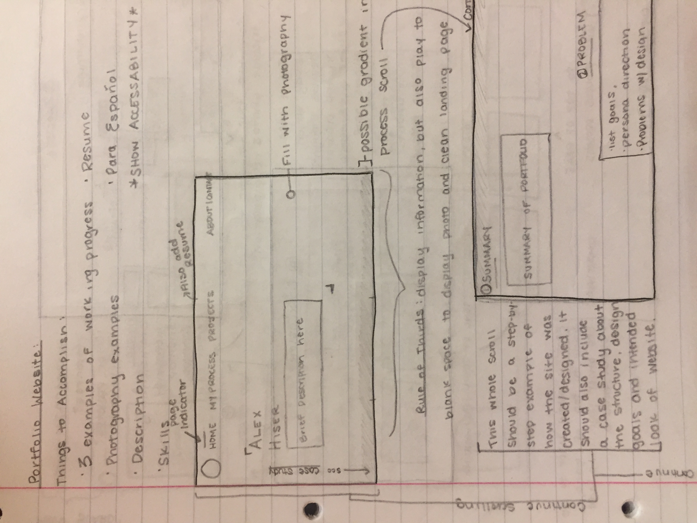
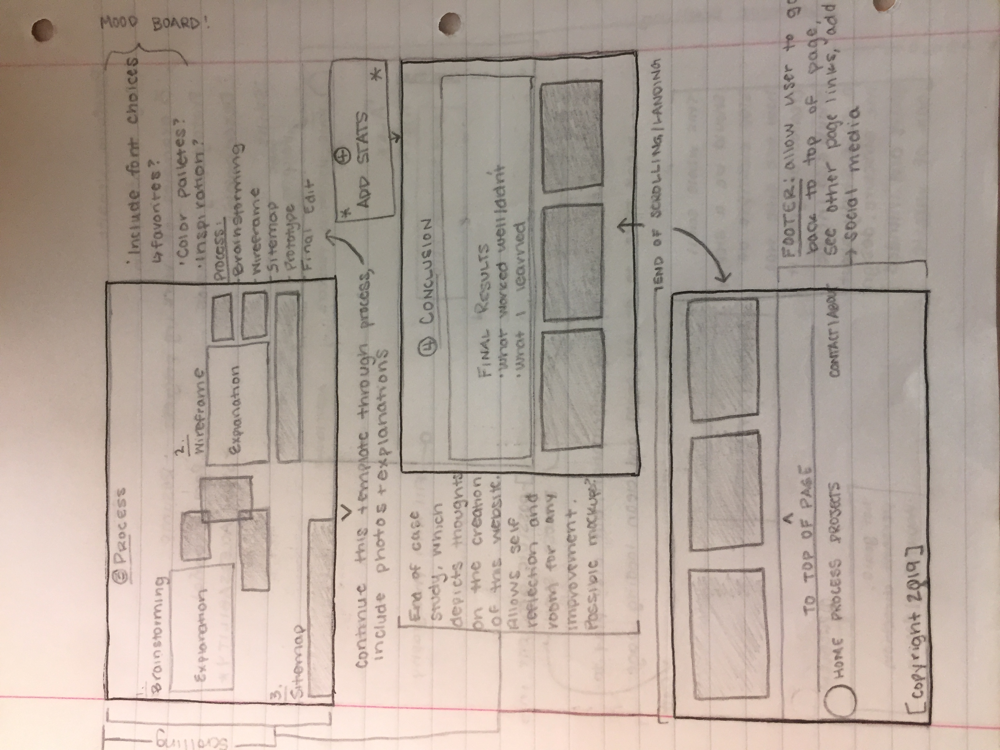

STEP 1: The first step in my process involves drawing sketches and taking notes. This helps organize possible designs and allows me to develop placement before putting information on a page.
STEP 2: The second step in the process involves turning the sketches into a digital wireframe. This allows me to set exact positions and begin testing for user-friendliness.